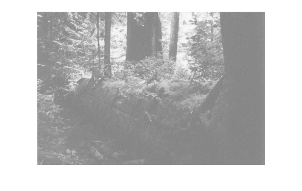
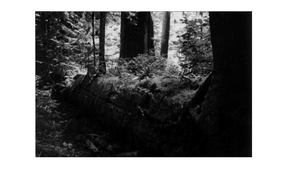
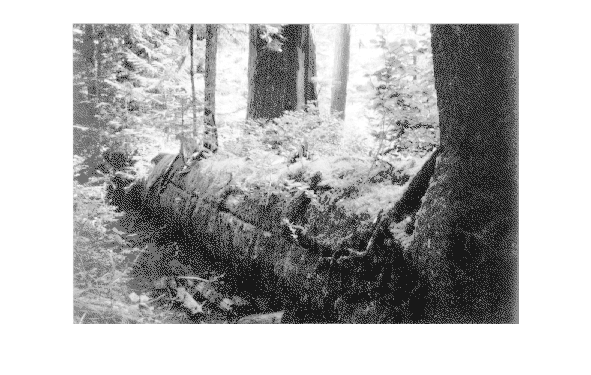
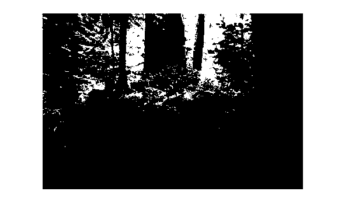
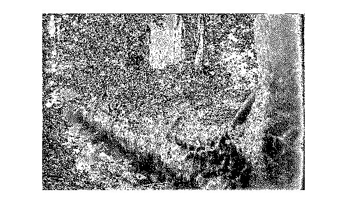

Contents
% % 4b. Praktikum - Punkttransformation + Histogramm % ------------------------------------------------ % Legen Sie in Ihrem Arbeitsverzeichnis ein Unterverzeichnis an: % 4b.Punkttransf+Histogramm % % Kopieren Sie das Notebook aus ../allg dorthin und benennen Sie es um in % 4b.Punkttransf+Histogramm_Gruppe-XY.m % Legen Sie dort ein Unterverzeichnis 'Ergebnisse/' an. % % Führen Sie die Arbeitsschritte aus, an denen ??? als Platzhalter steht % und speichern Sie das Notebook am Ende ab (zwischendurch auch % Sicherungskopien). % % Die Aufgabenstellung sowie Hinweise finden Sie im % DBV-Blatt4_Binomialfilter_und_Punkttransformationen.pdf % ------------------------------------------------------------------------
Initialisierung:
coder = 'Cinepak'; %'None', 'Cinepak', 'Indeo3' addpath('../Packages_Matlab'); addpath('../allg/'); addpath('../allg/Bilder'); %--------------------------------------------------------------------------
Bild einlesen:
g1 = imread( 'Bilder/forest_gray_reduced.pgm' ); %--------------------------------------------------------------------------
Histogramm:
Erzeugen Sie das Histogramm des Bildes und stellen Sie es zusammen mit dem Bild dar:
fig1 = figure(1); imshow( g1 ); fig2 = figure(2); imhist(g1); saveas( fig2, 'Ergebnisse/g1_histo.jpg' ); %--------------------------------------------------------------------------
Aufhellung:
Hellen Sie das Bild g1 deutlich auf. Stellen Sie es wieder mit dem Histogramm dar.
g2 = g1 + (255-max(max(g1))); figure(3); imshow( g2 ); figure(4); imhist( g2 ); imwrite( g2, 'Ergebnisse/g2-aufgehellt.jpg' ); saveas( fig2, 'Ergebnisse/g2-aufgehellt_histo.jpg' ); % Frage: Was bedeutet die Aufhellung für das Histogramm des % aufgehellten Bildes? % A: Aufhellen bedeutet im Histogramm eine verschiebung % nach links. Die Verteilung bleibt dabei gleich, alle Grauwerte werden um % den gleichen Wert verschoben. Die Dynamik bleibt gleich. %--------------------------------------------------------------------------
lineare Grauwertnormierung:
Heben Sie den Kontrast des Bildes !optimal! durch eine lineare Kennlinie an:
g3 = 255 / (max(max(g1)) - min(min(g1))) * (g1 - min(min(g1))); figure(5); imshow( g3 ); figure(6); imhist( g3 ); imwrite( g3, 'Ergebnisse/g3-normiert.jpg' ); saveas( fig2, 'Ergebnisse/g3-normiert_histo.jpg' ); % optimal bedeutet hier das die Dynamik des Bildes maximiert wurde. Alle % Grauwerte sollen vom Ergebnisbild ausgenutzt werden. %--------------------------------------------------------------------------
Histogrammequivalisierung bzw. -egalisierung:
Führen Sie eine Histogrammequivalisierung für das ursprüngliche Bild g1 aus:
g4 = histeq(g1); figure(7); imshow( g4 ); figure(8); imhist( g4 ); imwrite( g4, 'Ergebnisse/g4-egalisiert.jpg' ); saveas( fig2, 'Ergebnisse/g4-egalisiert_histo.jpg' ); % Fragen: % 1) Was fällt Ihnen auf? % A: In den dunklen bereichen sind helle Punkte. Im Histogramm sieht man % das insgesammt weniger verschiedene Grauwerte vorhanden sind. % % 2) Nennen Sie Gründe für diese Auffälligkeiten % A: Die hellen Punkte in den dunklen Stellen resultieren aus der % Aufteilung in gleich große Flächen. Die dunklen Grauwerte, die % häufiger vorhanden sind werden weiter auseinandergezogen. % Dadurch das viele helle Grauwerte selten vorkommen werden diese im % ergebnisbild zusammengefasst. Die hellen strukturen sind im Ergebnisbild % nicht mehr so deutlich zu erkennen. % %--------------------------------------------------------------------------
Quantisierung:
Bilden Sie die oberste (Bit 7) und die vierte (Bit 3) Bitebene des Bildes g3, für das Sie den Kontrast angehoben haben: Stellen Sie diese geeignet dar:
g5a = bitand( g3, 2^7 ); g5a(g5a > 0) = 255; g5b = bitand( g3, 2^3 ); g5b(g5b > 0) = 255; figure(9); imshow( g5a ); figure(10); imshow( g5b ); imwrite( g5a, 'Ergebnisse/g5a-obersteBitebene.jpg' ); imwrite( g5a, 'Ergebnisse/g5a-vierteBitebene.jpg' ); % Frage: Wieviele verschiedene Grauwerte enthält g5a ? % A: Im Ergebnisbild sind alle Grauwerte die größer gleich 128 sind mit % weiß dargestellt. % Bild mit vierter Bitebene zeigt alle Bildpunkte weiß, wo im Wert des % Grauweres im Ursprungsbild das vierte Bit gesetzt wurde. Deshalb sind % dort fast keine deutlichen Strukturen erkennbar. %-------------------------------------------------------------------------- 
Grauwertschwelle:
Frage: Durch welche Schwellwertbildung läßt sich die oberste Bitebene aus dem Quantisierungsbeispiel auch erzeugen? A: Das oberste Bit (Bit 7) hat den Wert 128. Man kann den Schwellwert also auf 128 setzen. Alles darunter wird schwarz, alles darüber weiß dargestellt.
Nehmen Sie die Schwellwertbildung am Bild g3 vor:
g6 = g3; g6(g6<128) = 0; g6(g6>0) = 255; figure(11); imshow( g6 );
'fertig'
ans = fertig